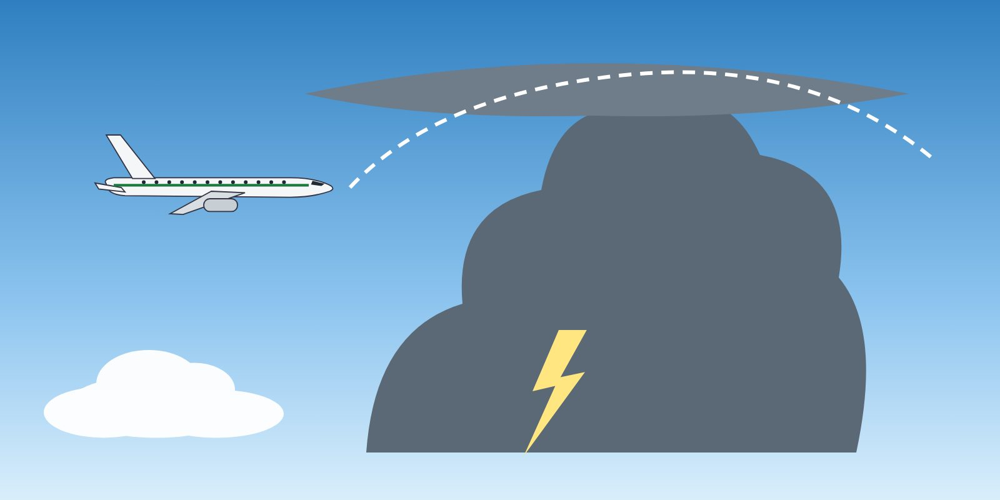

Module 2 · Thunderstorms and Planning
Lesson 04: Thunderstorm Avoidance and Weather Radar
Lesson narration
Checking for narration…
Learning objectives
- Plan thunderstorm avoidance on the ground and in flight.
- Use the weather radar correctly.
- Apply the avoidance distances and rules.

Thunderstorm hazards
Thunderstorms combine severe turbulence, windshear and microbursts, hail, lightning, icing, heavy rain and low visibility. Hazards extend outside the visible cloud and outside the radar echo.
Weather radar
- Tilt: adjust tilt continuously so that the beam scans the storm's most reflective (wet) part; too high and the cell disappears, too low and ground returns hide it.
- Gain: use the calibrated (preset) gain for cell assessment; manual gain only for analysis.
- Range: use a long range for strategic planning and a shorter range for tactical avoidance.
- Attenuation: heavy rain absorbs the beam — the area behind a strong cell may look clear when it is not (“radar shadow”).
- Dry hail, ice crystals and the upper part of a cell reflect weakly — a weak echo at high altitude can still be dangerous.
Avoidance rules (typical guidance)
- Avoid severe echoes by at least 20 NM, and more on the downwind side and at high altitude.
- Deviate upwind where possible; decide early and ask ATC in good time.
- Do not fly under the anvil (hail) or between closely spaced cells less than about 40 NM apart.
- Do not attempt to climb over a fast-growing cell.
- On the ground: do not take off or land into a thunderstorm; consider the gust front and its windshear.
If turbulence cannot be avoided
- Fasten seat belts — passengers and crew — and secure the cabin.
- Fly the turbulence penetration speed for your type; keep wings level and hold the attitude, not the altitude; avoid large control inputs.
- Use the autopilot as your procedure recommends; engine anti-ice / ignition as required.
Key takeaways
- Thunderstorm hazards extend beyond the cloud and the radar echo.
- Manage tilt, gain and range; beware of attenuation (radar shadow).
- At least 20 NM from severe echoes, upwind, never under the anvil or between close cells.
- In turbulence: seat belts, penetration speed, hold attitude.
Knowledge check
Why can the area behind a strong radar echo be dangerous even if it looks clear?